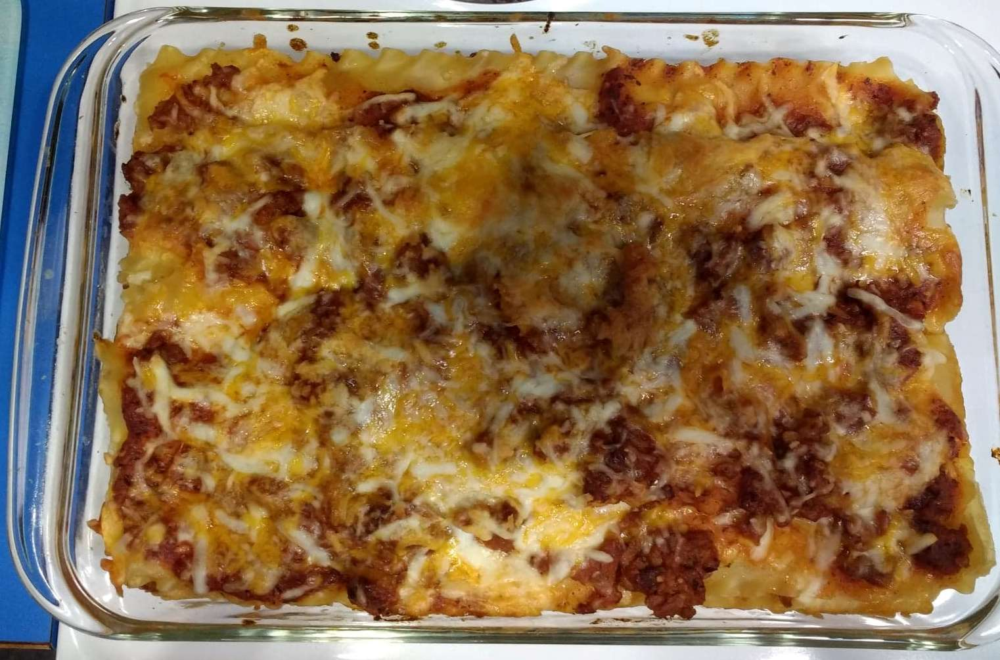

Southern Lasagna

Description
A tasty and zesty italian recipe to bring your taste buds a delight and joy. If you've been craving something cheesy and full of hearty taste, look no further!
Let's dive right into the ingredients!
Ingredients:
- 1 (16 ounce) package of lasagna noodles
- 1 pound of lean ground beef
- salt and pepper to taste
- 1 (16 ounce) jar of spaghetti sauce
- 1 clove garlic, minced
- 1/2 pound of shredded mozzarella cheese
- 1/2 pound of shredded cheddar cheese
- 1 pint of ricotta cheese
Cooking Directions:
- Bring a large pot of lightly salted water to a boil. Add pasta and cook for 8 to 10 minutes or until al dente;drain.
-
Preheat oven to 350 degrees F. In a large skillet over medium-high heat, brown beef and season with salt and pepper; drain. Stir in spaghetti sauce and garlic. Let simmer 5 minutes.
-
In a medium bowl, combine mozzarella, Cheddar and ricotta; stir well. In a 9x13inch pan, alternate layers of noodles, meat mixture and chesse mixture until pan is filled.
-
Lastly, Bake in pre-heated oven for 30 minutes, or until cheese is melted and bubbly.
Home